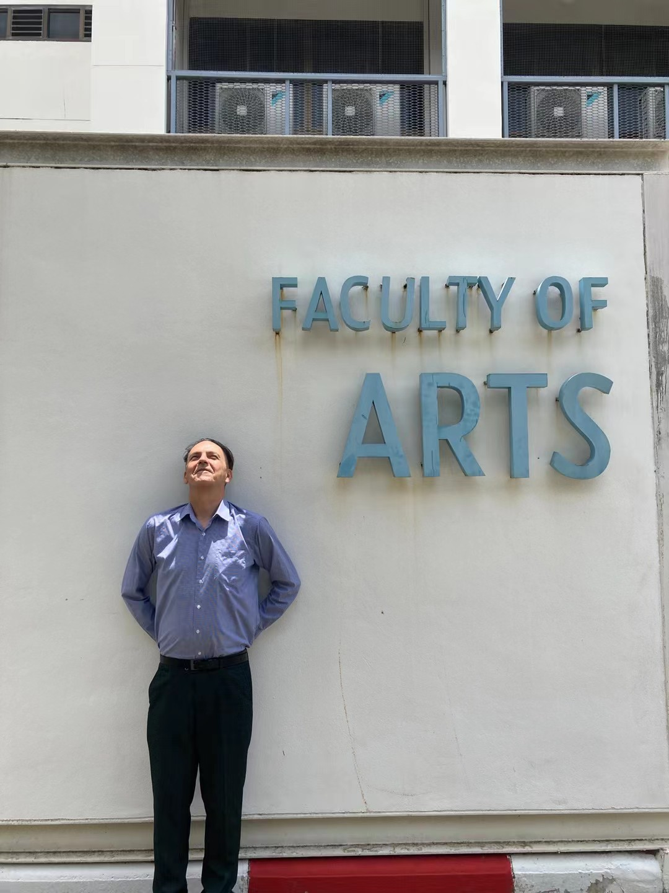
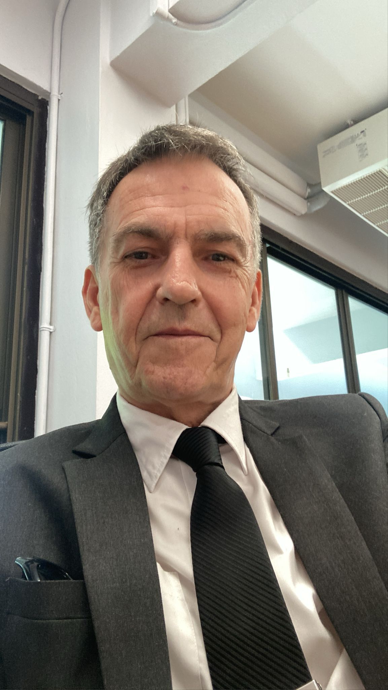

Writing
Clearer academic writing, structure, argument and style
Personalised one to one online coaching for students, researchers and professionals working in English medium environments.
Clearer academic writing, structure, argument and style
Confidence in seminars, presentations, discussion and Q and A
Understanding, evaluating and using academic sources
Dissertations, research communication and viva preparation
Meetings, presentations and workplace English
Communicating effectively across cultures and English medium environments
BA, MA and PhD students
Researchers
Educators and lecturers
Professionals in English medium environments
I provide teaching, coaching, formative feedback and language development support. I help clients understand academic expectations, practise transferable strategies and make their own informed revisions.
Clients remain responsible for ensuring that all submitted work follows their institution’s assessment, academic integrity and AI use policies.
My work is built around engaged participation, confidence, collaboration and respectful communication across cultures.



Client feedback will be shared here in due course.
Academic English is the language and communication skill set used to study, teach, research and participate effectively in academic settings. It goes beyond general English by focusing on how ideas are developed, evaluated and communicated within universities, colleges and professional learning environments.
Academic English includes critical reading, academic writing, seminar discussion, presentation, argumentation, research communication, responsible source use, academic integrity and the communication conventions of different disciplines.

I support students, researchers, educators and professionals to communicate clearly and confidently in academic and international settings.
Support that is personalised, practical and ethical. Every session is designed to help you communicate with greater clarity, confidence and independence in academic and professional English.
Every session is tailored to your goals, level, academic context and the communication challenges you want to address.
We work on communication you actually use, from academic writing and presentations to seminars and professional settings.
Song Bird develops your skills so you can communicate with confidence. I never complete assessed work for you.
Develop clearer arguments, structure your work, use sources critically and strengthen your academic voice.
Build confidence for seminars, presentations, Q and A and oral examinations.
Develop strategies for reading critically, discussing ideas and communicating effectively.
Develop confident communication for English medium academic and professional environments.
Book an Academic Communication Diagnostic to identify your strengths, priorities and practical next steps.
For small group programmes, mentoring or a tailored coaching plan, use the form to outline your needs and I will discuss an appropriate format with you.
Form submissions are sent securely through Netlify Forms.